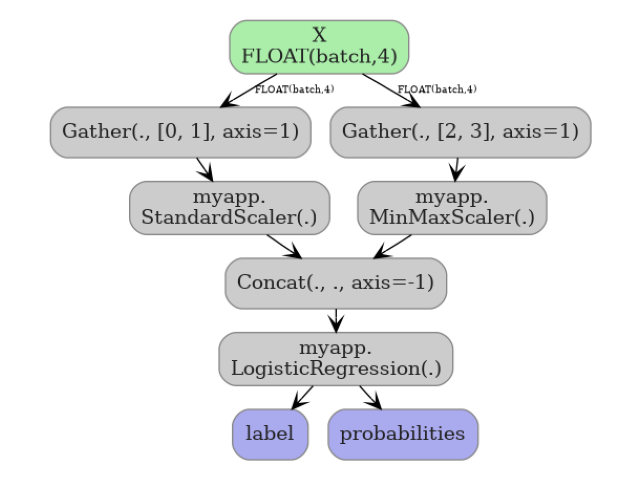
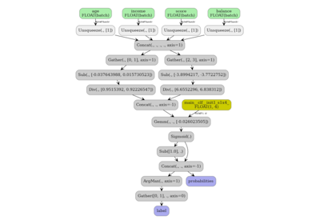

Note
Go to the end to download the full example code.
Exporting sklearn estimators as ONNX local functions#
By default yobx.sklearn.to_onnx() produces a flat ONNX graph
where every operator from every estimator is inlined directly in the
graph proto. This is fine for most use cases, but sometimes you want
to keep the high-level structure visible in the model — for example to make
the graph easier to inspect, to share weights between identical sub-models,
or to target a runtime that supports ONNX local functions natively.
The function_options argument of yobx.sklearn.to_onnx() lets you
wrap each estimator’s conversion as a separate ONNX local function inside
the model proto. Pass a FunctionOptions instance to
enable the feature:
Every leaf estimator becomes an ONNX
FunctionProtowhose name is the estimator’s Python class name and whose domain is the one you specify.PipelineandColumnTransformerare treated as orchestrators: the container itself is not turned into a function; instead each of its steps / sub-transformers is wrapped individually.The main graph only contains function-call nodes and the orchestration logic (e.g.
ConcatforColumnTransformer).
Passing function_options=False (the default) reverts to the flat graph.
import numpy as np
import onnxruntime
from sklearn.compose import ColumnTransformer
from sklearn.linear_model import LogisticRegression
from sklearn.pipeline import Pipeline
from sklearn.preprocessing import MinMaxScaler, StandardScaler
from yobx.doc import plot_dot
from yobx.sklearn import to_onnx
from yobx.xbuilder import FunctionOptions
1. Build and fit the models#
We will demonstrate three scenarios:
a standalone estimator (
StandardScaler),a Pipeline with two steps,
a ColumnTransformer with two sub-transformers.
rng = np.random.default_rng(0)
X = rng.standard_normal((100, 4)).astype(np.float32)
y = (X[:, 0] + X[:, 1] > 0).astype(int)
scaler = StandardScaler().fit(X)
pipe = Pipeline([("scaler", StandardScaler()), ("clf", LogisticRegression(max_iter=200))]).fit(
X, y
)
ct = ColumnTransformer([("std", StandardScaler(), [0, 1]), ("mms", MinMaxScaler(), [2, 3])]).fit(
X
)
pipe_ct = Pipeline(
[
(
"ct",
ColumnTransformer(
[("std", StandardScaler(), [0, 1]), ("mms", MinMaxScaler(), [2, 3])]
),
),
("clf", LogisticRegression(max_iter=200)),
]
).fit(X, y)
2. Create FunctionOptions#
FunctionOptions controls how functions are created:
name— a placeholder name that is required by the class but overridden per estimator (each function gets the estimator’s class name).domain— the ONNX domain under which all local functions are registered.move_initializer_to_constant— whenTrueevery weight tensor is embedded inside the function body as aConstantnode instead of being threaded through as an extra input (recommended for portability).
fopts = FunctionOptions(
name="sklearn_op", domain="myapp", move_initializer_to_constant=True, export_as_function=True
)
3. Standalone estimator as a local function#
The converted model contains a single FunctionProto called
StandardScaler in domain myapp. The main graph has only one node —
a call to that function — instead of the usual Sub/Div operators.
onx_scaler = to_onnx(scaler, (X[:1],), function_options=fopts)
print("=== Standalone StandardScaler ===")
print(f"Local functions : {[(f.name, f.domain) for f in onx_scaler.functions]}")
print(f"Main graph nodes: {[(n.op_type, n.domain) for n in onx_scaler.graph.node]}")
# Verify numerical correctness
sess = onnxruntime.InferenceSession(
onx_scaler.SerializeToString(), providers=["CPUExecutionProvider"]
)
result = sess.run(None, {"X": X})[0]
expected = scaler.transform(X).astype(np.float32)
assert np.allclose(expected, result, atol=1e-5), "Standalone scaler mismatch!"
print("Numerical output matches sklearn ✓")
=== Standalone StandardScaler ===
Local functions : [('StandardScaler', 'myapp')]
Main graph nodes: [('StandardScaler', 'myapp')]
Numerical output matches sklearn ✓
4. Pipeline: each step becomes a separate function#
The Pipeline container itself is not wrapped; each step gets its own
FunctionProto. The main graph chains two function-call nodes.
onx_pipe = to_onnx(pipe, (X[:1],), function_options=fopts)
print("\n=== Pipeline ===")
print(f"Local functions : {[f.name for f in onx_pipe.functions]}")
main_ops = [n.op_type for n in onx_pipe.graph.node]
print(f"Main graph nodes: {main_ops}")
assert "Sub" not in main_ops, "Raw scaler ops should not be in the main graph"
assert "Gemm" not in main_ops, "Raw LR ops should not be in the main graph"
sess_pipe = onnxruntime.InferenceSession(
onx_pipe.SerializeToString(), providers=["CPUExecutionProvider"]
)
X_test = rng.standard_normal((20, 4)).astype(np.float32)
label_onnx, proba_onnx = sess_pipe.run(None, {"X": X_test})
assert np.array_equal(pipe.predict(X_test), label_onnx), "Label mismatch!"
assert np.allclose(
pipe.predict_proba(X_test).astype(np.float32), proba_onnx, atol=1e-5
), "Proba mismatch!"
print("Pipeline labels and probabilities match sklearn ✓")
=== Pipeline ===
Local functions : ['StandardScaler', 'LogisticRegression']
Main graph nodes: ['StandardScaler', 'LogisticRegression']
Pipeline labels and probabilities match sklearn ✓
5. ColumnTransformer: each sub-transformer becomes a function#
The orchestration logic (Gather + Concat) stays in the main graph;
only the two leaf transformers become functions.
onx_ct = to_onnx(ct, (X[:1],), function_options=fopts)
print("\n=== ColumnTransformer ===")
print(f"Local functions : {[f.name for f in onx_ct.functions]}")
ct_ops = [n.op_type for n in onx_ct.graph.node]
print(f"Main graph nodes: {ct_ops}")
assert "Concat" in ct_ops, "Concat must remain in main graph for CT orchestration"
assert "Sub" not in ct_ops, "Raw scaler ops should not be in the main graph"
X_ct_test = rng.standard_normal((15, 4)).astype(np.float32)
sess_ct = onnxruntime.InferenceSession(
onx_ct.SerializeToString(), providers=["CPUExecutionProvider"]
)
result_ct = sess_ct.run(None, {"X": X_ct_test})[0]
expected_ct = ct.transform(X_ct_test).astype(np.float32)
assert np.allclose(expected_ct, result_ct, atol=1e-5), "CT output mismatch!"
print("ColumnTransformer output matches sklearn ✓")
=== ColumnTransformer ===
Local functions : ['StandardScaler', 'MinMaxScaler']
Main graph nodes: ['Gather', 'StandardScaler', 'Gather', 'MinMaxScaler', 'Concat']
ColumnTransformer output matches sklearn ✓
6. Pipeline and ColumnTransformer#
The flat graph (default) inlines all operators. The function graph keeps the structure clean in the main graph proto.
onx_pipe_ct = to_onnx(pipe_ct, (X[:1],), function_options=fopts)
print("\n=== Pipeline and ColumnTransformer ===")
print(f"Local functions : {[f.name for f in onx_pipe_ct.functions]}")
ct_ops = [n.op_type for n in onx_pipe_ct.graph.node]
print(f"Main graph nodes: {ct_ops}")
X_ct_test = rng.standard_normal((15, 4)).astype(np.float32)
sess_ct = onnxruntime.InferenceSession(
onx_pipe_ct.SerializeToString(), providers=["CPUExecutionProvider"]
)
result_ct = sess_ct.run(None, {"X": X_ct_test})[1]
expected_ct = pipe_ct.predict_proba(X_ct_test).astype(np.float32)
assert np.allclose(expected_ct, result_ct, atol=1e-5), "Pipeline+CT output mismatch!"
print("Pipeline+ColumnTransformer output matches sklearn ✓")
=== Pipeline and ColumnTransformer ===
Local functions : ['StandardScaler', 'MinMaxScaler', 'LogisticRegression']
Main graph nodes: ['Gather', 'StandardScaler', 'Gather', 'MinMaxScaler', 'Concat', 'LogisticRegression']
Pipeline+ColumnTransformer output matches sklearn ✓
7. Visualize the function graph#
The main graph of the pipeline model shows two function-call nodes.
plot_dot(onx_pipe_ct)

Total running time of the script: (0 minutes 0.990 seconds)
Related examples

DataFrame input to a Pipeline with ColumnTransformer

Float32 vs Float64: precision loss with PLSRegression